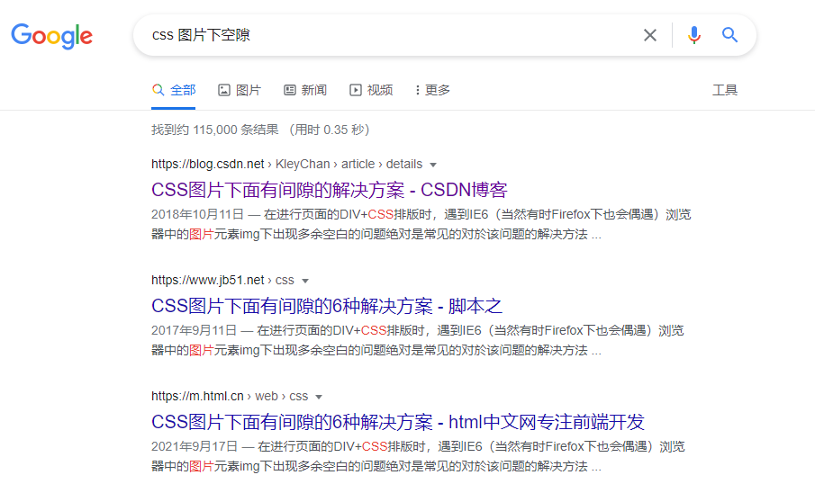

前端工程师应该都有遇到过，使用图片时会在下方有个小空隙。这个小空隙很难找到它是如何形成的，但是还好我们有搜索引擎，因此很容易会知道解决办法：

其中一种技巧非常简单有效：把字体设为0。很多时候可能就到此为止了。
引子
一直没有思考过，为什么图片下面会有一个空隙。直到逛知乎刷到尤雨溪的一篇回答，关于这个空隙的，非常通俗易懂，再进入到 对应的知乎问题 看到各种大佬们的分析，很有意思，做个分享。
里面有一篇译文，非常全面剖析了行内元素，CSS里文字的度量、行高（line-height）。如果想深入学习细节，建议直接前往 。(PS: 这篇文章我最认可的点是结论的第一条😀)
原因
本文的原因部分可以认为是我对这些大佬回答的理解，如果没看懂我写的，可以直接去原问题浏览更多解决方案及解释。
图片作为行内元素，默认的对其方式的基线对其，基线是西文字体的概念，如图：
红线所示即为基线（baseline），注意看，文字的底线（bottom）和基线之间是有一段距离的，这个就是图片下有空隙的原因。
再通俗一点：
图片底部是基于文字基线的，而容器 div 的底部是低于基线的
中文文字虽然没有基线的概念，但是也有留白区域，所以中文也有类似的问题。
下面会有动手环节，提供相应代码方便有兴趣的同学可以快速自行验证。
解决方式
可以看到，既然问题是出现在文本的基线问题上。那么就围绕这一点来解决：
img 设置 display:block
vertical-align:top/bottom/middle
font-size设为 0 （注意对文本不能这么操作，手动狗头……）
衍生问题
难怪在移动端开发时，设计同学给出的设计稿，在还原后验收时，经常受到设计同学的灵魂拷问，这里怎么没居中。
设计同学不知道的是，前端同学自己也很懵逼，我明明设置了line-height和高度一样，为什么就偏上偏下了？很可能就是系统下字体本身的问题。
在比较小的按钮上效果会比较明显，考虑到大家的眼睛健康和视力问题，真诚地建议设计师不要追求一些“高级感”而把文字、按钮设计得过小。再结合这个问题，一定要小的话，别用边框了，也就不容易看出来。
动手试试
以下case使用codepen演示，无法加载的话可能需要科学上网。考虑到科学的门槛和速度，贴个图替代下。
原始case：

See the Pen 图片下的小空隙 by Huanyu Li (@sky-admin) on CodePen.
文字case：

See the Pen Untitled by Huanyu Li (@sky-admin) on CodePen.
做业务时不求甚解也许不是坏事，但是钻研深一分总有收获。
其他
img元素为什么默认是个行内元素呢？
img元素是个比较早的元素，然后它本质上不是那张图，而是那个链接的占位符。于是作为占位符它默认就是个inline元素。